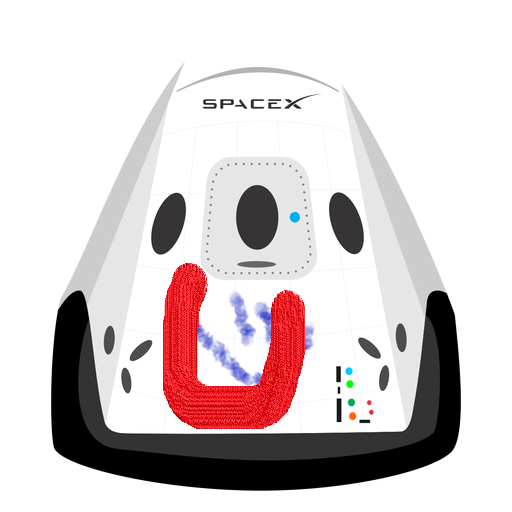

Hyperblog
Tu blog de cabecera
Este es el titulo atractivo e interesante del post
Y este es el párrafo de inicio donde vamos a explicar las cosas increíbles que se pueden hacer 5con ramas

Los blogs son la mejor forma de compartir informacion y tus ideas.Mucho mas que ir a conferencias o a salir en youtube. Excepto si eres un rockstar.Pero estadisticamente no lo eres... por ahora.
Suscribete y dale like